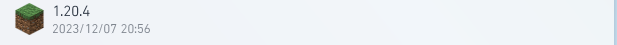
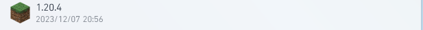
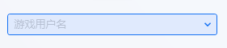

打开PCL2，点击下载，你会看到像这样的一堆东西:
然后点开"正式版":

点击1.20.4，就是这个： 
你可以选择安装原版，Forge，或者Fabric。点击"开始安装"，PCL2就会自己帮你下载版本了。
Q&A:
Q:安装不成功怎么办?
A:多试几遍，或者换个网络试试。
2.1 下载Minecraft启动器
目前的游戏启动器有很多种，像 PCL2 BakaXL 还有 HMCL，那么为了照顾许多的新入坑Minecraft的萌新玩家们，本手册均采用了由龙腾猫跃开发的PCL2启动器。
--下载PCL2
打开浏览器，输入下载地址，密码填pcl2，点击确认。点击Release 2.x.x，然后点击普通下载。不出所料的话，你的浏览器就会开始自动下载压缩包了。
下载之后打开你的下载文件夹，右键刚刚下载下来的压缩包，选择“全部解压缩”(Windows 11)或“解压到 你的下载文件夹路径\Release 2.x.x”(Windows 10)。
解压完成之后，双击打开刚刚解压到的文件夹，双击Plain Craft Launcher.exe，这样，你就成功地在自己的电脑上运行了一个Minecraft启动器。
Q&A:
Q:如果他说我没有安装.NET环境怎么办?
A:去官网下载.NET4.5.0。
2.2 下载Minecraft版本
打开PCL2，点击下载，你会看到像这样的一堆东西:
然后点开"正式版":
点击1.20.4，就是这个：

你可以选择安装原版，Forge，或者Fabric。点击"开始安装"，PCL2就会自己帮你下载版本了。
Q&A:
Q:安装不成功怎么办?
A:多试几遍，或者换个网络试试。
2.3 进入服务器
在下载好了版本之后，你就可以启动游戏了(哦耶！！！)。进入PCL2界面中的"启动"部分的框框

中填入自己的用户名，然后按下面的"启动游戏"，等待一会，PCL2就会启动游戏了。
在进入服务器之前，我们还需要进行一些些小小的设置(非必须，不想设置的玩家可以跳过这一部分)，这可以让你的游戏体验变得更加好。
1.点击选项，点击视频设置，把"垂直同步"设置调为"关"
2.同样是在视频设置，把最大帧率拉到最大
3.还是视频设置，把渲染距离和模拟距离都调成6
调完这些，你就可以开心的进入服务器玩耍了。
回到最初始的界面，点击"多人游戏"，再点击"添加服务器"。上面的服务器名称可以随便填，这里以"像素之梦生存服务器"为例。然后，在下面的服务器地址里填上像素之梦服务器的地址，也就是mc.recraft.cc:

点击完成，你就添加好了服务器。
选中刚添加的服务器，点击"加入服务器"，你就成功的进入了服务器。进入服务器后按照聊天框的指引注册或者登录，如果你发现有人用了你的id，那么可以关闭游戏，换个用户名再试试。
如果你成功注册了，那么你手上应该会出现一个末影之眼。手持它并右键，你就可以选择你想去的区。
注意！各个区之间的数据并不互通，建议只玩一个区！
3.1.1 金币
金币，是服务器里万物贸易的基础，也是服务器最基本的货币。在了解其他货币之前，我们就首先需要了解金币体系是怎么运作的。
金币可以用于玩家间交易，通常用于玩家A购买玩家B的物品，一般在玩家之间流通。金币可以买很多东西，从最基础的生存物资，到最高级的宝石宝珠，都可以通过金币交易获得。
如何创建一个自己的商店
首先，你需要有至少一个你想要收购或者贩卖的物品。拿出一个箱子，放在任何你想当作商店的地方。手持你想收购或者贩卖的物品右键，输入你想要贩卖或者收购的价格，按下键盘上的Enter或者回车键，这样，你就成功的创建了一个自己的商店。
而对于收购来说则要多一步操作。在你是店主的前提下右键商店的告示牌，点击聊天框里的"回收类型:售卖[修改]"后面的修改，他就会自动把商店修改成收购模式
怎么购买他人的物品
对着告示牌左键，然后输入你想要购买的物品数量，就可以购买了！(前提是你有足够多的金币)
那说了这么多，怎么获取金币呢？
获取金币有好几种方式，像前面说的，第一你可以通过卖东西赚钱，还有就是你可以通过活动、抽奖等服务器官方渠道获取，比如你可以通过每天签到来获取金币。
3.1.2 点券
点券和金币的性质差不多，都是一种在市场上流通的货币，不过应用范围不一样。前面讲过，金币适用于任何范围，包括P(Player)2(to)S(Server)(玩家对服务器)交易还有P2P(玩家对玩家)交易。可是点券不一样，他只适合于P2S交易，你只能用点券在服务器那里买资源，不能向玩家买资源。这就是金币与点券最大的区别。
如何获取点券
点券只能通过服务器渠道获得，比如抽奖、向腐竹氪金活动领取等等。
点券可以买什么
点券就可以买很多更高级的东西了，比如大部分的抽奖券、一些装备例如范围镐（快速挖掘3x3x3内方块）、副本的进入名额等。
总结：点券就是一种只能对服务器进行交易的货币，使用它你可以买更多你用金币买不到的东西，但是获取门槛很高，需要充钱才能获得。
3.1.3 像素币
像素币是一种比较特殊的货币，它只能购买相当少的物品，并不是主流货币。
不过，你仍然可以使用像素币购买一些例如抽奖券的物品。
总结：小众，获取难。
在讲淬炼体系之前，我们必须得先了解一个东西，那就是服务器里的淬炼石。
淬炼石通常形状为附魔"水下呼吸I"的木炭，煤炭，下界之星，带有淬炼石对应的等级。
其中，形状为木炭的淬炼石淬炼效果最差，煤炭中等，下界之星最好。
不过，也不能只看淬炼石的等级。如果你要淬炼的装备的淬炼星数在0~6级，那么通常建议你使用"普通淬炼宝石"。
而如果你要淬炼的装备的淬炼星数在6~10级，则建议你使用"中等淬炼宝石"。
而10级以上则可以按需挑选自己需要的淬炼宝石进行淬炼。
回到正题，那么我们该怎么淬炼呢?
在聊天框打出"/spawn"或者"/cd"之后点击信标，你就会回到主城。
找到一个叫淬炼铁砧的NPC，如图所示:

然后右键他，会得到这样的界面:
这是区域图示:
放好装备和材料后点击末影水晶就可以淬炼惹=w=(好耶~)
星数越高，淬炼越容易失败。当你淬炼高等级物品的时候(10星+)，除非很有把握，否则建议添加熔火珠后再继续淬炼。
(此教程正在持续更新中，如有疑问可以添加作者QQ:2399421609或者在游戏中私聊玩家:driver166)